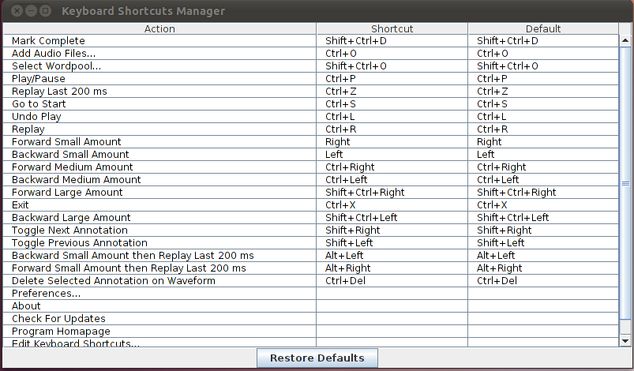

Swing currently lacks a reusable keyboard shortcut manager widget. Additionally, Swing's action system suffers from many deficiencies, including an irritating amount of in-code boilerplate. Swing Shortchut Manager provides the missing shortcut manager, automatically stylized to the underlying playtform (Mac, Linux, or Windows), and allows action configuration in declarative XML. The manager is written in Scala, but can be used from any JVM language, Java included.



<dependency> <groupId>com.yuvimasory</groupId> <artifactId>swing-keyboard-manager_2.9.2</artifactId> <version>1.0.0</version> </dependency>
<dependency org="com.yuvimasory" name="swing-keyboard-manager_2.9.2" rev="1.0.0"/>
libraryDependencies += "com.yuvimasory" %% "swing-shortcut-manager" %% "1.0.0"
You can download this project in either zip or tar formats.
You can also clone the project with Git by running:
$ git clone git://github.com/ymasory/swing-keyboard-manager.gitAlternatively, you can browse the code through GitHub.